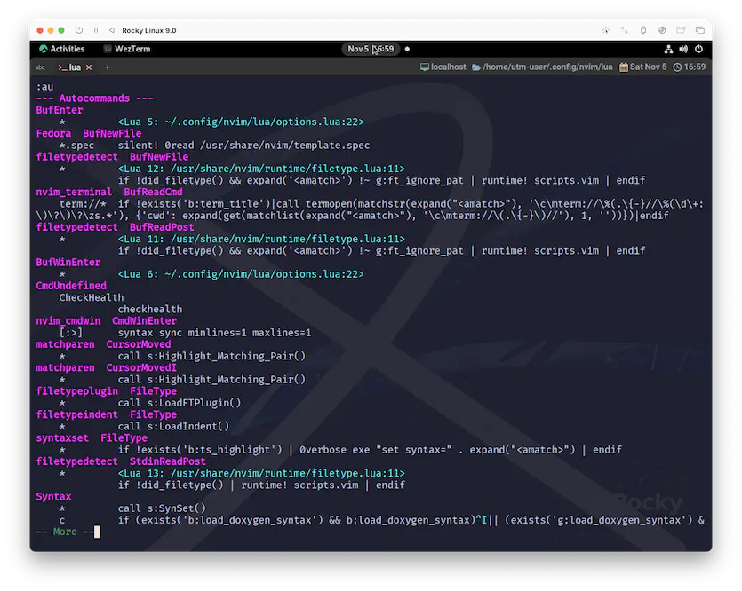

nvim_create_autocmd
いつだっておじさんは熱くアドバイスしてくれます☺️
nvim_create_autocmd({event}, {*opts}) nvim_create_autocmd()
Create an |autocommand|
The API allows for two (mutually exclusive) types of actions to be
executed when the autocommand triggers: a callback function (Lua or
Vimscript), or a command (like regular autocommands).
このAPIでは、オートコマンドのトリガー時に実行されるアクションとして、
コールバック関数（LuaまたはVimscript）、
またはコマンド（通常のオートコマンドと同様）の
2種類（相互に排他的）を指定することができる。
-- Example using callback:
local myluafun = function() print("This buffer enters") end
vim.api.nvim_create_autocmd({"BufEnter", "BufWinEnter"}, {
pattern = {"*.c", "*.h"},
callback = myluafun,
})
ヘルプではもっと色々なサンプル付きで説明されていますが、今回はここで切り上げます😅
autocmd
現時点でautocmdがどのように登録されているのかは、以下のコマンドを実行してみると確認できます。
こんな感じに出てきたでしょうか。
ここに、自分で作ったautocmdを追加して「全てのバッファに対してtab関連の設定をするぞ❗」というのが
この節の趣旨であり、これこそが10.3.1節の問題を解決する方法です。
準備はよろしいでしょうか？
...OK❓
OKね...❗
それでは、例によって一つずつ確認していきます。
event
まずはeventなんですが、autocmd-eventsがこれでしょう🤔
5. Events autocmd-events E215 E216
You can specify a comma-separated list of event names.
No white space can be used in this list.
The command applies to all the events in the list.
イベント名のリストをカンマ区切りで指定することができる。
このリストには空白を使用できない。
コマンドは、リスト内のすべてのイベントに適用される。
で、上の例で使用されていたBufEnterとBufWinEnterだけ抜粋すると以下です。
After entering a buffer. Useful for setting
options for a file type. Also executed when
starting to edit a buffer.
バッファに入った後。
ファイルタイプに応じたオプションを設定するのに便利。
また、バッファの編集を開始するときにも実行される。
After a buffer is displayed in a window. This
may be when the buffer is loaded (after
processing modelines) or when a hidden buffer
is displayed (and is no longer hidden).
バッファがウィンドウに表示された後。
これは、バッファが読み込まれたとき (モデリング処理後) か、
非表示のバッファが表示されたとき(そして非表示でなくなったとき) かもしれない。
Not triggered for |:split| without arguments,
since the buffer does not change, or :split
with a file already open in a window.
Triggered for ":split" with the name of the
current buffer, since it reloads that buffer.
引数なしの |:split| や、
すでにウィンドウで開いているファイルとの :split では、
バッファは変更されないためトリガーされない。
現在のバッファの名前を指定した ":split" では、
バッファを再読み込みするためトリガーが発生する。
pattern
次はpatternです。これはfile-patternとして説明されています😌
The pattern is interpreted like mostly used in file names:
このパターンは、ファイル名によく使われるものと同じように解釈される。
* matches any sequence of characters;
Unusual: includes path separators
? matches any single character
\? matches a '?'
. matches a '.'
~ matches a '~'
, separates patterns
\, matches a ','
{ } like \( \) in a |pattern|
, inside { }: like \| in a |pattern|
\} literal }
\{ literal {
\\\{n,m\} like \{n,m} in a |pattern|
\ special meaning like in a |pattern|
[ch] matches 'c' or 'h'
[^ch] match any character but 'c' and 'h'
callback
最後にcallbackですが、これはnvim_create_autocmdの中に記述が見つかります。
Lua function which is called when this autocommand is triggered.
Cannot be used with {command}.
このオートコマンドが起動した際に呼び出されるLua関数。
{コマンド}とは併用できない。
実践
これらを踏まえて、改めて今回やりたいことを明確にすると、
event: バッファに入った際にpattern: 全てのファイル(パターン)に対してcallback:nvim_buf_set_optionを通してtab関連の設定をする
...に、なります。
eventについては、ヘルプ内で例示を行ってくれているので、そのまま採用します。(助かったぁ😆)
あとはもう、patternは簡単だし、callbackは既に書いたコードを持ってくれば良いだけですね😉
vim.api.nvim_create_autocmd({ 'BufEnter', 'BufWinEnter' }, {
pattern = '*',
callback = function()
-- 10.3.1 節で書いたコードをここに移動する
vim.api.nvim_buf_set_option(0, 'tabstop', 2)
vim.api.nvim_buf_set_option(0, 'shiftwidth', 0)
vim.api.nvim_buf_set_option(0, 'expandtab', true)
end,
})
それでは、nvimを再起動して、もう一度:auを実行してみましょう...。

options.luaに書いたイベントが登録されていることが確認できましたね❗
編集画面に戻って適当にタブ入力をしてみてください。タブ幅の設定は反映されていますか❓
...されてますよね⁉️